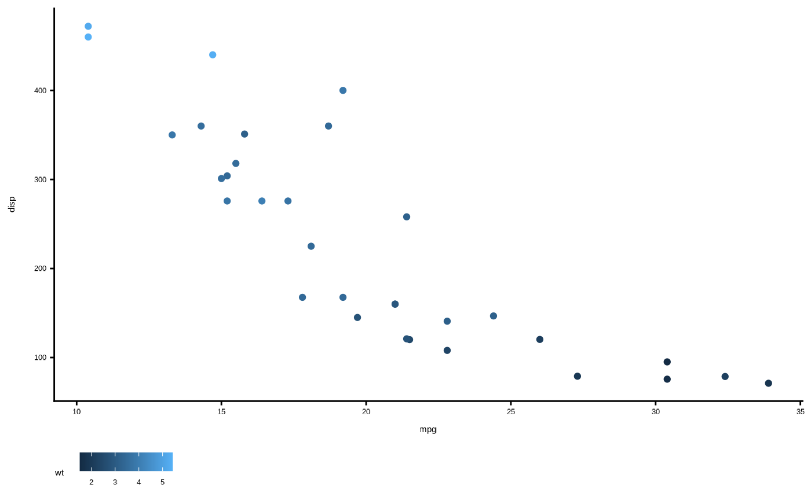

Custom ggplot2 theme
Usage
theme_MSU(
base_size = 11,
base_family = "Metropolis",
header_family = NULL,
base_line_size = base_size/22,
base_rect_size = base_size/22,
rel_small = 12/14,
rel_tiny = 11/14,
rel_large = 16/14,
ink = "black",
paper = "white",
accent = "#3366FF"
)Arguments
- base_size
Base font size for text elements. Default 12.
- base_family
Font used for all text elements. Default "Metropolis".
- header_family
Font family for titles and headers. The default, NULL, uses theme inheritance to set the font. This setting affects axis titles, legend titles, the plot title and tag text.
- base_line_size
Base line size is
base_size/22- base_rect_size
Base rectangle size is
base_size/22- rel_small
Relative size of small text (e.g., axis tick labels)
- rel_tiny
Relative size of tiny text (e.g., caption)
- rel_large
Relative size of large text (e.g., title)
- ink
Text colour. Default "black".
- paper
Background colour. Default "white".
- accent
Accent colour. Default bright blue, "#3366FF"
Examples
library(ggplot2)
ggplot(data = mtcars, aes(x = mpg, y = disp, color = wt)) +
geom_point() +
theme_MSU()
